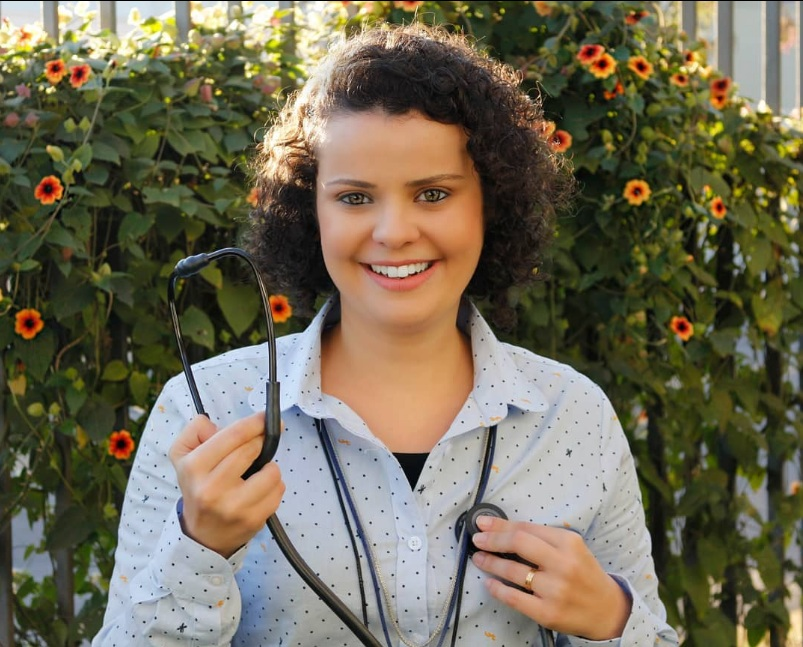

Cuidar antes de adoecer
Conversar sobre hábitos, vacinas e exames indicados para sua idade e sua história, evitando intervenções sem necessidade.
MEDICINA DE FAMÍLIA E COMUNIDADE
Um olhar para você por inteiro: sua saúde, sua rotina e o que importa na sua vida. Cuidado que acompanha, orienta e se constrói com o tempo.
Dra. Mariana Franco Ribeiro de Oliveira
CRM-PR 26.519

ENTENDA A ESPECIALIDADE
A medicina de família e comunidade cuida de pessoas de diferentes idades. Considera os sintomas e também a rotina, as relações e o contexto de cada pessoa.
Conversar sobre hábitos, vacinas e exames indicados para sua idade e sua história, evitando intervenções sem necessidade.
Avaliar queixas frequentes e dúvidas sobre saúde, definir os próximos passos e reconhecer quando é necessário outro tipo de atendimento.
Acompanhar condições como hipertensão e diabetes, revisar tratamentos e integrar o cuidado com outros profissionais quando necessário.
Você não precisa ter uma doença para buscar cuidado. Pode levar uma dúvida, conversar sobre prevenção ou acompanhar algo que já faz parte da sua vida.
Saiba mais na Sociedade Brasileira de Medicina de Família e Comunidade ↗
ATENDIMENTO ONLINE
A teleconsulta é uma consulta médica por videochamada. Ela pode ajudar na orientação e no acompanhamento, conforme a avaliação médica de cada situação.
Se for necessário exame físico ou outra avaliação, o atendimento presencial será orientado.
Veja como agendar ↗Informe a data e o período desejados. Aguarde o contato para combinar o horário e confirmar a consulta.
Tenha uma conexão estável, câmera e microfone. Escolha um ambiente reservado e separe seus exames e a lista de medicamentos.
Use o link recebido na confirmação. Durante a consulta, compartilhe suas dúvidas e combine os próximos passos.
SEU PRÓXIMO PASSO
Indique a data e o período desejados. A consulta será marcada somente após nossa confirmação.
A teleconsulta não é um serviço de urgência. Em uma emergência, procure atendimento presencial ou ligue 192.
A data escolhida é uma preferência, sujeita à confirmação de disponibilidade.
O envio será liberado após configurar o contato de atendimento. Nenhuma solicitação foi enviada.
DÚVIDAS FREQUENTES
Não. A consulta também é um espaço para prevenção, orientação sobre hábitos, revisão de cuidados e dúvidas sobre sua saúde.
Não. O atendimento pode ser individual. O nome da especialidade reflete um cuidado que considera a pessoa e seu contexto familiar e comunitário.
Não. Algumas situações precisam de exame físico ou outros recursos presenciais. A médica avalia se o atendimento online é adequado e orienta a continuidade do cuidado.
Após a confirmação do horário, você receberá as orientações de acesso pelo canal de atendimento. O envio de uma solicitação não confirma a consulta.